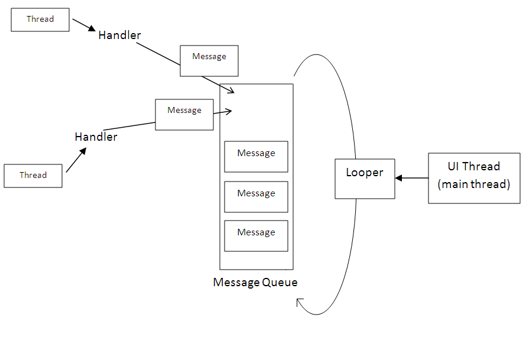

Threads and Thread Communication
What are Threads and why use them ?
Threads keeps to UI Thread from having to perform resource or run-time intensive operations that would slow down an app or programm.
A common way to prevent this is to execute runtime intensive operations in separate runtime environments called threads.
Those threads will be executed in parallel to a main thread (in particular on multi-core hardweare architectures) a
How to implement Threads in Java
There are two methods on how to implement Threads in Java:
-
Using a individual class that extends
Threadand overrides therun()method:1 2 3 4 5 6 7 8 9 10
public class Main extends Thread { public void run() { System.out.println("This code is running in a thread"); } public static void main(String args[]) { Main m = new Main(); m.start(); } } -
Using a individual class that implements the
Runnableinterface and implements therun()method:1 2 3 4 5
public class Main implements Runnable { public void run() { System.out.println("This code is running in a thread"); } }
Using Threads in Android
Threads can be implemented in a separate class or added to a method’s body in form of an annonymous Thread object that takes an implementation of the Runnable interface in form of an annonymous inner class passed to its constructor.
1 2 3 4 5 6 7 8 9 10 11 12 13 14 | |
Thread Communication
A common way for threads or AsyncTasks to communicate with the UI thread from which they were initiated is via Handler.
A handler receives messages from background threads and updates views on the UI thread (Source: stackoverflow.com)
Handler encapsulate a message queue (the Looper) that allows a Thread (incl. the UI thread) to receive messages from other Threads.
For processing received messages, the Thread in which the handler was instantiated has to implement the handleMessage() callback method.
public void handleMessage (Message msg)
In that way, handlers allow the realization of an asynchronous communication between different threads.
Communication via Message Handlers
The Thread requires a reference of the Handler instance of the receiving Thread.
1 2 3 4 5 6 7 8 9 10 11 12 13 14 | |
Implementing the Handler
The main (or receiving) Thread needs to instantiate a new message handler and pass this instance as references to the threads it wants to receive messages from.
1 2 3 4 5 6 7 8 9 10 11 12 13 14 15 16 | |
Invoking Commands on UI Elements of the UI Thread
Another possibility on how to pass data to the UI Threads is via the post() methods of its UI elements.
Example
1 2 3 4 5 6 7 8 9 10 11 12 13 14 15 16 17 18 19 20 21 | |
Invoking Threads
There are several ways on how to realize concurrent operations or tasks
- By subclassing the
AsyncTaskclass and implementing a new AsyncTask - By implementing the runnable interface and passig it to as argument to
AsyncTask.execute(new Runnable() {...} ) - By creating a new class and implementing the
Runnableinterface - By using the
Threadclass from thejava.lang.Threadpackage - By using classes from the
java.util.concurrentpackage
In this lecture, we only concentrate on the first three methods and specifically investigate AsyncTasks.